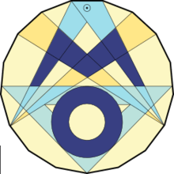

Mathematik
Kurzbeschreibung des Faches:
Mathematische Denkweisen und Verfahren finden Anwendung in zahlreichen Wissenschaften und Berufen. Mathematisch gewonnene Aussagen sind Grundlage von Meinungsbildungen, Argumentationen und Entscheidungen in Politik und Wirtschaft. Zahlen dienen zur Legitimation von Forderungen, Stellungnahmen und Beschlüssen. Immer mehr Bereiche unseres Lebens werden mit Hilfe von Zahlen und mathematischen Modellen beschrieben, immer mehr Probleme werden durch mathematische Modellrechnungen und Simulationen zu lösen versucht.
Im Mathematikunterricht sollen SchülerInnen durch schrittweise Erweiterung der mathematischen Methoden und Verfahren lernen, inner- und außermathematische Problemstellungen zu bewältigen. Dabei sollen sie ihre eigenen Erfahrungen, Vorkenntnisse und methodischen Fertigkeiten einbringen können.
Das Lehrwerk "Elemente der Mathematik" aus dem Schroedel Verlag wird an unserer Schule von Klasse 5 bis 12 verwendet.
Mathematik in der Orientierungsstufe:
In der Orientierungsstufe wird Mathematik 5-stündig unterrichtet. Es sind 6 Klassenarbeiten im Schuljahr zu schreiben.
- Themen der 5. Klasse: Natürliche Zahlen und Größen, Rechnen mit natürlichen Zahlen, Körper und Figuren, Flächen- und Rauminhalte, Brüche
- Themen der 6. Klasse: Bruchzahlen, Dezimalbrüche, Kreis-Winkel-Abbildungen, Multiplizieren und Dividieren in Bruchzahlen, Statistische Daten, Ganze Zahlen
Mathematik in der Mittelstufe:
In der Mittelstufe wird Mathematik 4-stündig unterrichtet und es sind 5 Klassenarbeiten zu schreiben.
- Themen der 7. Klasse: Zuordnungen - Dreisatz, Prozent- und Zinsrechnung, Winkel in Figuren, Rationale Zahlen, Zufall und Wahrscheinlichkeit, Drei- und Vierecke, Terme und Gleichungen
- Themen der 8. Klasse: Terme und Gleichungen mit Klammern, Lineare Funktionen, Lineare Gleichungssysteme mit 2 Variablen, Daten und Zufall, Wurzel - Reelle Zahlen, Vielecke - Kreise - Prismen, Satz des Thales - Ähnlichkeit
- Themen der 9. Klasse: Quadratische Funktionen und Gleichungen, Potenzen und Potenzfunktionen, Satz des Pythagoras, Trigenometrie, Sinusfunktion, Exponentialfunktionen, Pyramide - Kegel - Kugel
Mathematik in der Oberstufe:
Mathematik wird in der Oberstufe als Kernfach auf erhöhtem Niveau unterrichtet, in der Einführungsphase 3-stündig, in der Qualifikationsphase 4-stündig.
Durch alle drei Oberstufenjahre ziehen sich die Themen Analysis, Analytische Geometrie und Stochastik. In der Einführungsphase werden die Grundlagen gelegt, die in der Qualifikationsphase erweitert werden.
In der Einführungsphase (10. Klasse) werden 3 doppelstündige Klausuren geschrieben, in Klasse 11 sind 4 doppelstündige Klausuren vorgesehen. Im ersten Halbjahr des letzten Schuljahres (12.1) wird nach einer 2-stündigen Klausur eine 6-stündige Klausur unter Abiturbedingungen geschrieben, die Aufgaben aus allen drei Themengebieten Analysis, Analytische Geometrie und Stochastik enthält.
Das Abitur wird in Mathematik vom Ministerium zentral gestellt und enthält aus allen drei Themengebieten Aufgaben, einige aus einem gemeinsamen Aufgabenpool, der mit anderen Bundesländern geteilt wird.
Aktivitäten der Fachschaft:
Jedes Jahr im März findet der Känguru-Wettbewerb statt, bei dem unsere SchülerInnen gemeinsam mit vielen tausend anderen Schülern aus aller Welt an mathematischen Problemen knobeln.
Alle 14 Tage treffen sich Herr Rehbein und Frau Gudat mit mathematikinteressierten SchülerInnen in der Mathe-AG. Diese Gruppe beteiligt sich auch an der Mathematik-Olympiade und der langen Nacht der Mathematik.
Birgit Gudat (Fachschaftsleitung Mathematik)
Mathe-Blog
Mathe-Olympiade
Wie jedes Jahr im November fand am 15.11.23 in Eutin die Kreisrunde der Mathe-Olympiade statt, an der Schülerinnen und Schüler unserer Mathe-AG teilnahmen. Zusammen mit den Jugendlichen der anderen Gymnasien, die im Kreis Ostholstein teilnahmen, wurden an diesem Vormittag mehrstündige Matheklausuren geschrieben.
Herausragende Leistungen des Leibniz-Teams zeigten:
Joon Altmann 1. Platz in der Stufe Q2
Oliver Zech 2. Platz in der Stufe Q2
Marcel Christ 2. Platz in der Klassenstufe 5
4. Plätze erreichten Mina Weiß (6. Klasse), Ben Borowski (7. Klasse), Antonio Kosminski (8. Klasse) und Jurij Engelmann (9. Klasse).
Marcel und Joon haben sich damit für die Schleswig-Holstein-Olympiade am 23./24.02.24 in Neumünster qualifiziert. Wir drücken den Beiden die Daumen.
Insgesamt ein toller Erfolg für das Team Leibniz!
Michael Rehbein und Birgit Gudat


Erfolg bei der Mathe-Olympiade

Nach zweijähriger Corona-Abstinenz durften wir dieses Jahr am 23. November in Eutin wieder zur Kreisrunde der Mathe-Olympiade in Präsenz antreten.
Zusammen mit Schülerinnen und Schülern anderer Gymnasien des Kreises Ostholstein wurden am Vormittag in der Aula der Voss-Schule die Klausuren geschrieben.
Besonders erfolgreich haben folgende Leibnizianer abgeschnitten:
Alba Heins (2. Platz, 5. Klasse)
Antonio Kosminski (2. Platz, 7. Klasse)
Karl Engeln (2. Platz, E-Jahrgang)
Joon Altmann (2. Platz, Q-Jahrgang)
Oliver Zech (1. Platz, Q-Jahrgang)
Für ihre herausragenden Leistungen erhielten sie Buchgutscheine, zudem haben sich einige dieser Teilnehmer durch diesen Erfolg für die Landesrunde qualifiziert, die Ende Februar an der Universität in Flensburg durchgeführt werden wird.
Herzlichen Glückwunsch!!!
Frau B. Gudat und Herr M. Rehbein


Voller Erfolg bei der Mathe-Olympiade

Für die diesjährige Landesrunde der Mathe-Olympiade qualifizierten sich sechs Schülerinnen und Schüler unserer Schule – so viele wie noch nie in der Vergangenheit.
Wegen der Corona-Pandemie wurden die Klausuren am Leibniz geschrieben, statt wie üblich mit allen anderen Teilnehmern zusammen an der Universität Flensburg. Hierbei erreichten insbesondere vier Schülerinnen und Schüler herausragende Plätze: Joon Altmann (10. Jahrgang) und Pai Doose (12. Jahrgang) bekamen für ihre Leistung eine Anerkennung und Celina Marquardt (12. Jahrgang) erreichte einen 3. Preis. Sensationell war Antonio Kosminski: In der Klassenstufe 6 erhielt er einen 1. Preis!!! Das ganze Leibniz-Gymnasium gratuliert!
Frau B. Gudat und Herr M. Rehbein
Mathe-Olympiade unter Corona-Bedingungen
Aufgrund der Corona-Pandemie durften die Teilnehmer der Mathe-AG nicht wie sonst zur Kreisrunde der Mathe-Olympiade nach Eutin fahren, stattdessen fand der Wettbewerb für unsere Schüler hier im Leibniz-Gymnasium statt. Zur Korrektur wurden die Arbeiten anschließend von der Kreisbeauftragten Birgit Behr (Voss-Schule Eutin) an verschiedene Lehrkräfte im Kreis verteilt. Besonders erfolgreich waren:
Besonders erfolgreich waren:
- Jette Julius (6. Klasse) mit Auszeichnung
- Dominik Schmelter (7. Klasse) 3. Platz
- Kai Klindwort (9. Klasse) mit Auszeichnung
- Hendrik Heinemeier (9. Klasse) 3. Platz
- Pai Doose (Q1-Jahrgang) 3. Platz
- Celina Marquardt (Q1-Jahrgang) 1. Platz
- Paula Altmann (Q2-Jahrgang) mit Auszeichnung und besonderem Lob für durchgängige Teilnahme seit der 5. Klasse!!!
Herzlichen Glückwunsch!!!
Frau B. Gudat und Herr M. Rehbein
Erfolge bei der Landesrunde der Mathematik-Olympiade
 Am vergangenen Wochenende nahmen die Leibnizer Dominik Schmelter (6. Klasse), Axel Harder (9. Klasse) und Celina Marquardt (E-Jahrgang) an der Landesrunde der Mathematik-Olympiade teil, die wie schon in den vergangenen Jahren an der Europa-Universität in Flensburg durchgeführt wurde.
Am vergangenen Wochenende nahmen die Leibnizer Dominik Schmelter (6. Klasse), Axel Harder (9. Klasse) und Celina Marquardt (E-Jahrgang) an der Landesrunde der Mathematik-Olympiade teil, die wie schon in den vergangenen Jahren an der Europa-Universität in Flensburg durchgeführt wurde.
Unsere drei Schüler hatten sich im vergangenen November während der Kreisrunde mit herausragenden Leistungen für das 14-köpfige Ostholstein-Team qualifiziert. Und auch bei der Landesrunde konnten alle drei überzeugen: Während Dominik für seine Leistungen eine Teilnahmeurkunde erhielt, wurden Axels Ergebnisse mit Auszeichnung gewürdigt.
Noch besser schnitt Celina ab: Die Korrektur ihrer zwei jeweils vierstündigen Klausuren ergab eine so hohe Punktzahl, dass sie den zweiten Platz in ihrer Altersstufe belegte. Hierdurch steht sie im vorläufigen Kader für die Bundesrunde der Mathematik-Olympiade, die dieses Jahr im Mai in Bonn stattfindet. Für das zugehörige Vorbereitungscamp wünschen wir Celina alles Gute und hoffen, dass sie hier den endgültigen Sprung ins 11-köpfige Schleswig-Holstein-Team schafft!
Herr M. Rehbein